Canelle is a classic french pastry with a mix of textures. The outside is a deep caramelized flavour with a sweet, vanilla moist intiror .

Flakey, buttery and light. A french classic, it needs no introduction.

The signature croissant, except its wrapped in chocolate batons giving it a flaky but dark chocolatey flavour.

Naturally leavened and slow fermented for over 24 hours, this bread boasts a tangy flavour profile.

Soft and pillowy, great as an appetiser.

The opera cake is a french masterpiece in that it is a showcase of precision and flavour. It has an almond sponge inner that is soaked with espresso syrup.
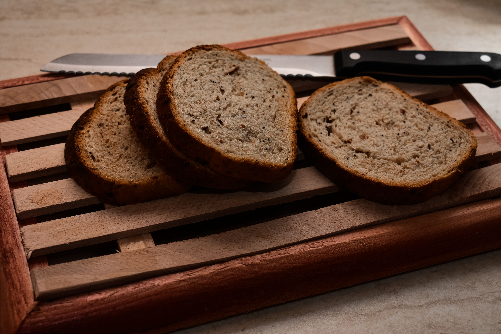
Wholewheat Bread - baked using finely ground wholegrain flouor, this loaf is both healthy and delicious
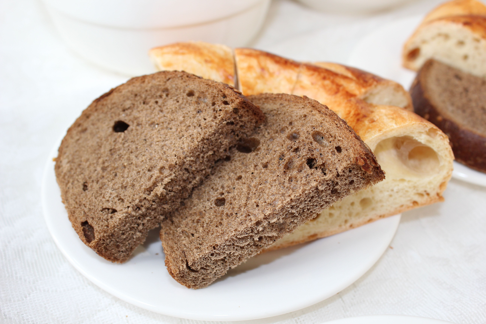
Made for those with a depth of flavour, it has a dense and chewy texture.
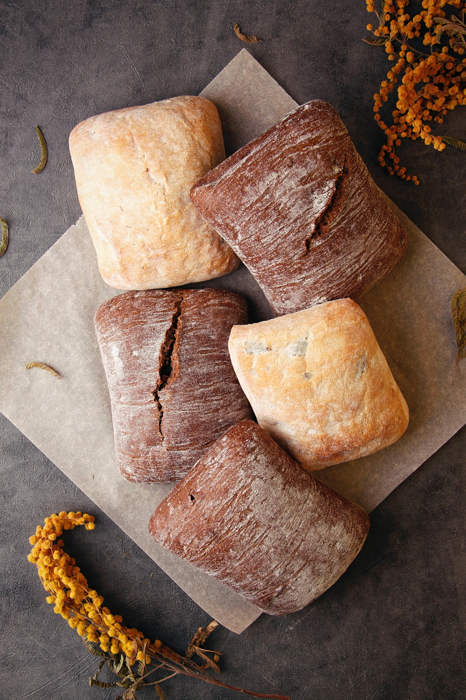
Ciabatta - A classic bread best used in sandwiches
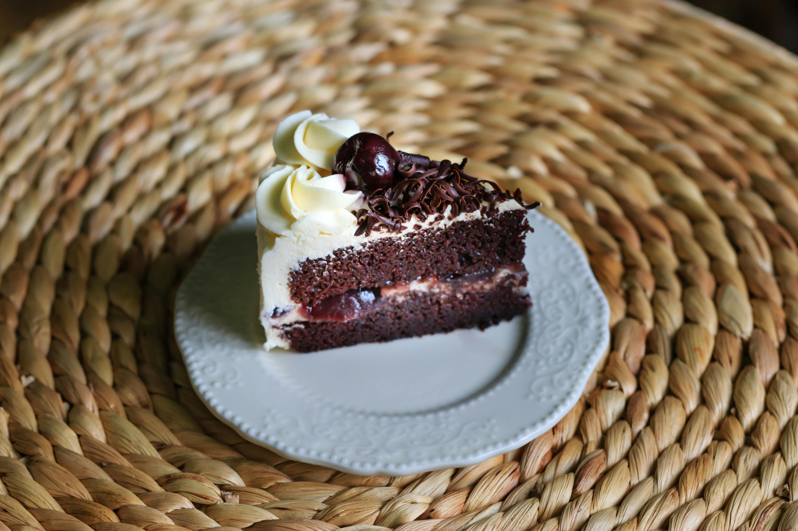
The black forest cake has a deep, rich chocolate sponge cake that is brushed with liquer syrup
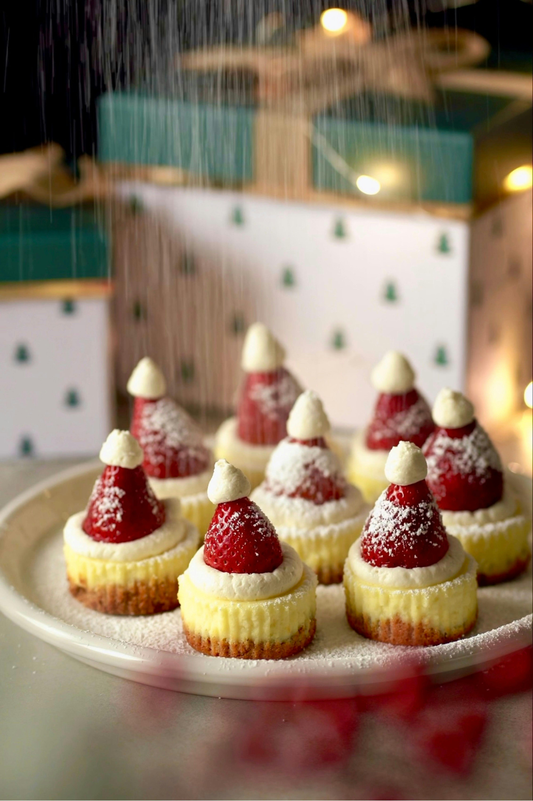
Baked slow and low to achieve its one of a kind texture, it is dense, smooth and velvety.
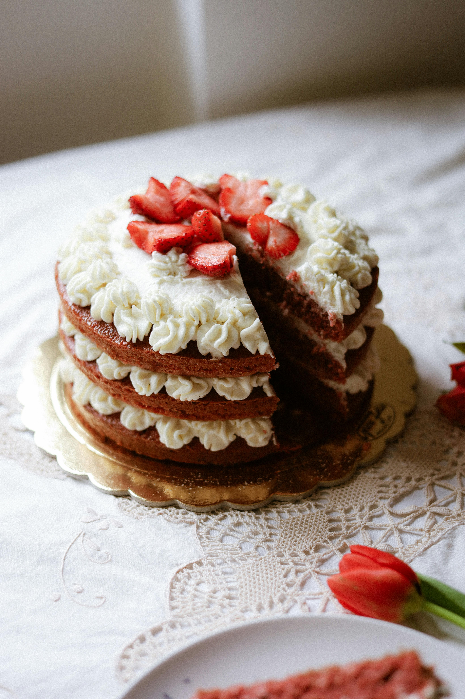
Airy light chiffon sponge cake with a generous serving of freshly whipped cream and sweet, juicy strawberries.

Classic & Comforting Naturally sweet and comforting, our Banana Muffin is made the old-fashioned way with real, perfectly ripened bananas
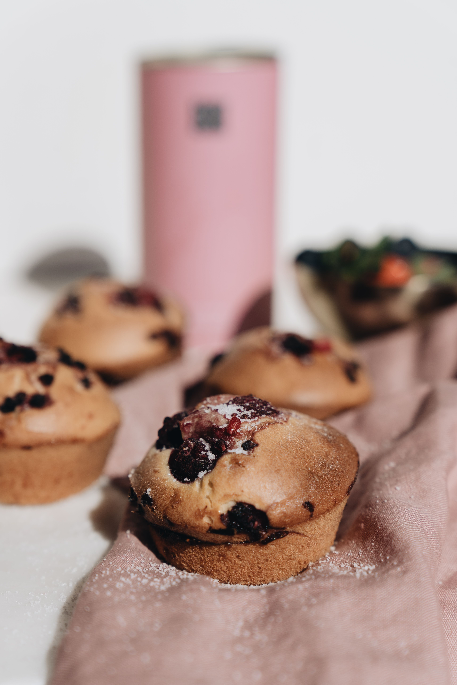
Sweet & Berry Fresh Celebrate summer flavors all year round
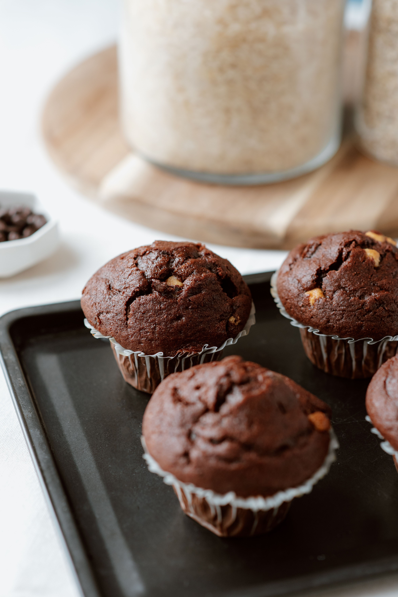
Rich & Decadent For the ultimate chocolate lover. Our Chocolate Muffin is deep, fudgy, and incredibly moist.
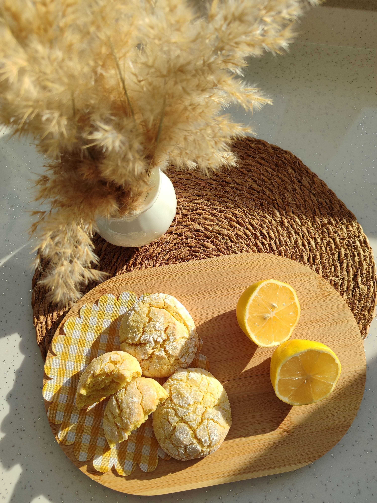
Zesty & Bright Bring a little sunshine to your morning with our vibrant Lemon Muffin.
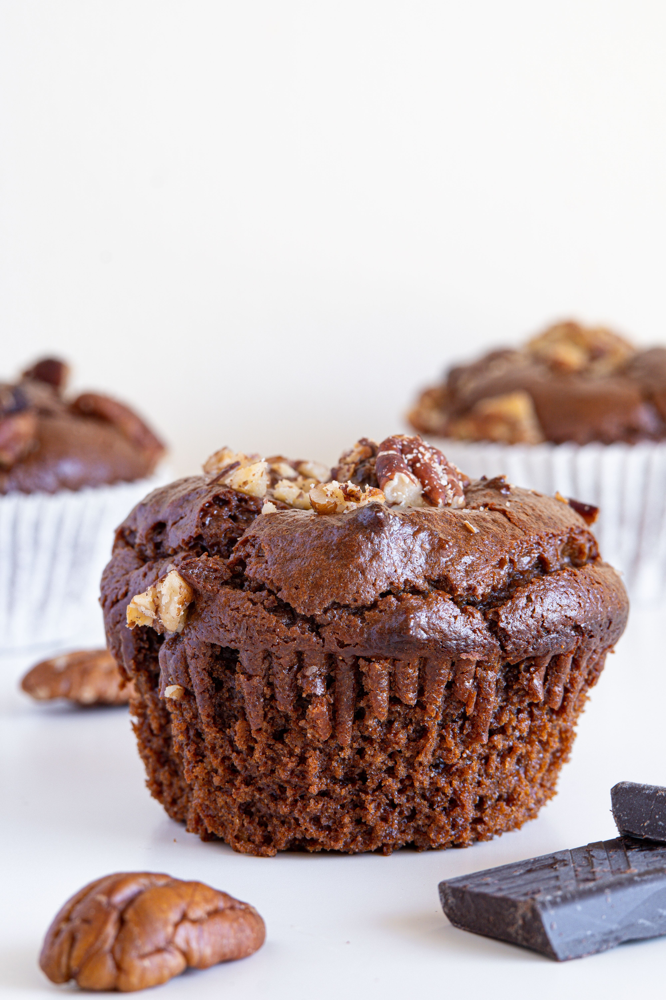
Nutty & Golden A delightful blend of textures. This muffin features a soft, brown-sugar batter infused with vanilla, topped with a generous, buttery crumble and roasted, crunchy pecans
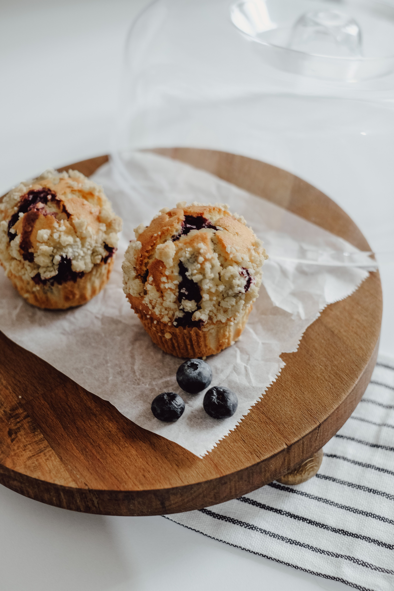
he Ultimate Classic You can't go wrong with a timeless favorite. Our traditional Blueberry Muffin is packed to the brim with plump, wild blueberries that burst with juice in every single bite.